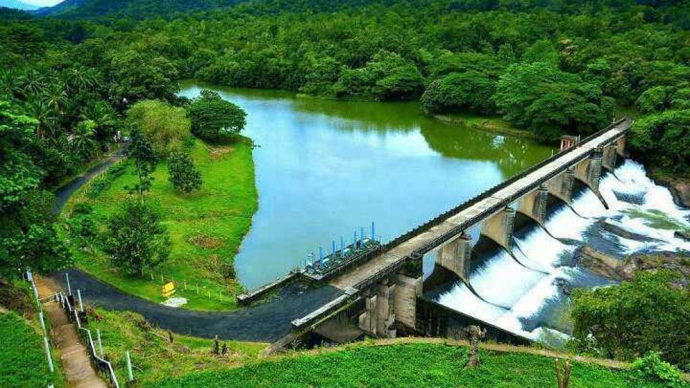
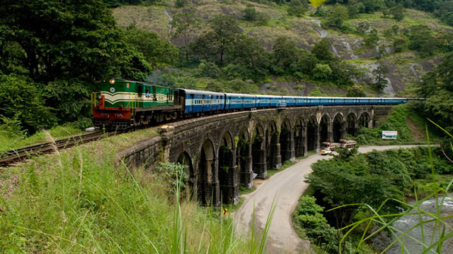
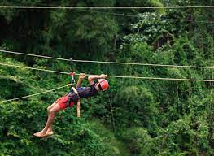
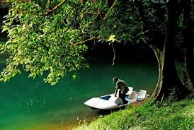

Thenmala
Thenmala is an ecotourism site in Kerala, a state in southwest India. It lies just north of the Thenmala Dam, which spans the Kallada River. The Elevated Walkway winds through a thick canopy of trees, home to many native birds. To the east, Pathimoonam Kannara Bridge is a 13-arched bridge along a mountain railway route. Farther east, the Palaruvi Falls cascade into a deep pool.